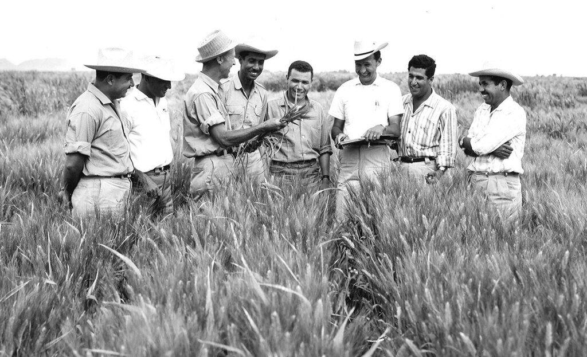

The man who saves a billion lives
"Borlaug's life and achievement are testimony to the far-reaching contribution that one man's towering intellect persistence and scientific vision can make to human peace and progress."
-- Indian Prime Minister manmohan singh